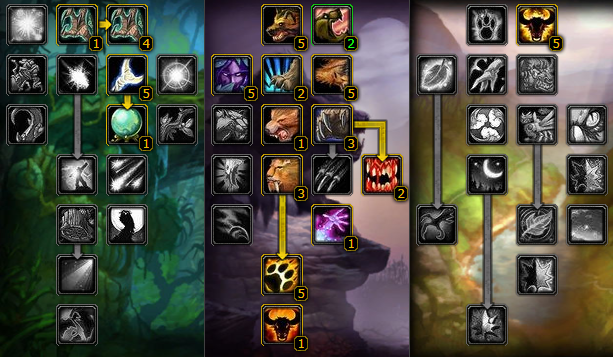
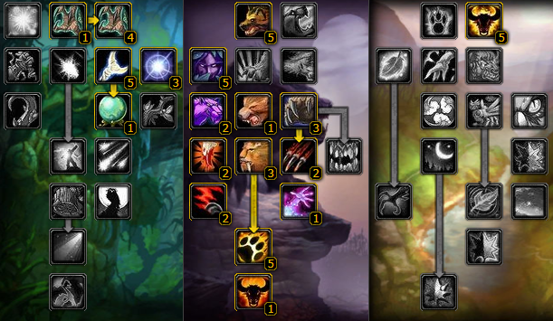

Druid
This guide primarily focuses on healing. Feral DPS & Tank sections are incomplete.
Author: Fargur
Source: WoW-One
↗
Druids are an extremely versatile class, able to fulfill practically every role in the game – including tank, healer, and ranged and melee DPS – and this versatility makes them a popular choice for brand new players (particularly those who are unsure yet of how they want to play as they level). They are able to shapeshift into different animal forms (including bear, cat, raven, and many others). Depending on their current form, talent spec, and equipped gear, a druid is able to fill any role. Their versatility comes at a price, as druids often have mild to severe drawbacks in each of these roles when compared to less-versatile classes, although not such that they are prevented from doing a perfectly acceptable job.
Druids 3 talent specializations are Feral (Tank/Melee DPS), Balance (Ranged DPS), and Restoration (Healer).
If you'd like a more in-depth look at the Druid class, check out the video below.
Stats
Feral
Stamina: 1 Stamina = 10 health.
Strength: 1 Strength = 2 Attack Power.
Agility: 1 Agility = 1 Attack Power.
1 Attack Power = 1 DPS.
Agility: 57 Agility = 1% Critical Strike Chance
Intellect: 1 Intellect = 15 Mana.
For DPS with at least 33% raid buffed crit chance or above; Hit (to 9%) > Strength > AP > Crit/Agility
For DPS with less than 33% raid buffed crit chance; Hit ~(to 9%) > Agility > Str > Crit > AP
For Tanking; Agility > Armour > Dodge/Stamina > Crit
Bear Tank
Armour > Stam > Agi > Hit/Dodge > Crit > Str
Hit% - 9% to never miss an attack.
Agility - 1 Agi = 2 Armour & 1 AP, ~20 Agi = 1% Dodge & 1% Crit.
Stamina - 1 Stam = 10 HP, 12 HP with 5/5 Heart of the Wild (HotW)
DR% = Armour / (Armour + 400 + 85 * (Attacker Level + 4.5 * (Attacker Level - 59)))
Dodge% = 0.9% + (Agi / 20) + Miscellaneous Contributions + (Attacker's Attack Skill * 0.04)
Kitty DPS
Hit > Str > Agility > Crit > AP
Hit% - 9% to never miss an attack.
Agility - 1 Agi = 1AP, ~20 Agi = 1% Crit.
Attack Power - ~14 AP = 1 DPS.
Strength - 1 Str = 2 AP, 2.4 AP with 5/5 HotW.
source: A Grizzly Situation
Talents
Restoration
Restoration Talents are not very complicated to handle, since there are not many possible variations. Basically, there are two possible builds for a Restoration Druid:
Moonglow 24/0/27 ↗
This is the basic build for all beginners. Since there are no really useful talents in the higher
feral or balance trees, just cover all the useful restoration talents and put the remaining 5
points into Nature’s Grasp. Although it’s nearly useless for raids, it’s pretty handy for solo
play.
This would be the preferable build for 5man/10man instances, with a better possibility to defuse
emergency situations with Swiftmend, and Subtlety will increase your chances of survival significantly.
Deep Resto 5/0/46 ↗
This is the build for advanced raiders with some better gear, since crit becomes very valuable
with it. It takes away Swiftmend and Subtlety, but gives 9% less mana cost and 0.5s cast time
reduce after a spell crit. Subtlety should really not be necessary in 20/40man raids anymore
and Swiftmend is worth losing for increased mana efficiency and faster casting speeds from time
to time. Nature’s Focus and Improved Rejuvenation are no vital talents for raiding, since Healing
Touch will be your main spell and you should not take damage very often that disrupts your casts.
The Talents I chose to put into Balance before Nature’s Grace & Moonglow are not necessarily
to be copied (except for Improved Thorns maybe).
Feral
Below are the two most common feral builds for tanking & dps.

Pre-Raid Gear
Below is a google doc containing the BiS items for resto and feral tank & dps.
If you want to save a copy of the doc for yourself, click
here
Tanking
Threat
Bear Druids have the same threat modifiers as Warriors: 130% for Bear Form and Defensive Stance, or 149.5% if you have 5/5 Defiance or 5/5 Feral Instinct. Unlike Warriors however, our base tanking abilities do not have an additive threat component like Warriors, instead, they are multiplicative. Each point of damage done by Maul or Swipe does an additional 0.75 threat, before we take into account the form modifiers. For example, if a Maul does 200 damage, it does 200 * 1.75 = 350 threat, or 350*1.3 * 1.15 for a total of 523 threat when including Bear Form and 5/5 Feral Instinct.
Since we do not have an additive threat component like Warriors, we do reduced threat against high armour enemies, and increased threat against low armour enemies. Crits greatly increase our threat.
source: A Grizzly Situation
Enchants
Ensuring you have the proper enchants on your gear not only will ensure you are maximizing your DPS output, but will also make sure you are taken seriously.
Restoration
- Helm: Prophetic Aura > Arcanum of Focus
- Shoulder: Zandalar Signet of Serenity
- Cloak: Sublety
- Chest: Greater Stats / Major Mana
- Wrist: Mana Regeneration or Superior Stamina
- Gloves: Healing Power
- Legs: Prophetic Aura > Arcanum of Focus
- Boots: Minor Speed is my preferred choice, others may go with Greater Stamina or Spirt
- Weapon: Healing Power
Consumables
Consumables are very important for Classic raiding, even if it can take a lot of time to farm them all. If you want to be a successful raider, you will have to work for it.
Restoration
Buff Potions:
- Flask of Distilled Wisdom
- Elixir of the Sages
- Mageblood Potion
- Elixir of Greater Intellect
- Rumsey Rum Black Label
Buff Food:
Temporary Weapon Buff:
Mana Potions:
How To Heal Effectively
As mentioned before, your main spell to heal with will be Healing Touch. Healing Touch and Rejuvenation are the spells that profit the most from Bonus Heal, but Rejuvenation is just not reliable enough to use it effectively. Since the most healing in Classic is done with direct heals, most of it would be wasted on a full HP bar after one or two ticks. It is not forbidden to use, but only on targets that take continuous damage or have to be kept at 100% HP (Most of the time, this would be the Main Tank).
For anything else, use Healing Touch. NEVER use Regrowth (except for Vaelastrasz in BWL maybe) since it is a very expensive spell which will result mostly in useless overheal.
Of course, using Rank 10 (or 11 if learned) of HT (=Healing Touch) will only be possible if a target has lost a big enough amount of health to not result in a huge amount of overheal. This will only happen in some exceptional cases or in combination with Nature’s Swiftness.
For that reason, we make use of downranking (using a spell with a lower rank). Downranking decreases the healed amount, but also the mana cost and the cast time. This makes you not only heal faster, but also increases the efficiency of your healing, because the overheal is reduced and the healing done per mana point spent increases with an increasing amount of bonus heal on your gear.
For example: Rank 10 HT heals an average amount of 2060 for 720 mana, resulting in the amount of 2,9 HPM (Healing per Mana). Calculating Rank 4 (220 Healing/110 Mana) results 2,0 HPM. Now we add 500 Bonus Healing and calculate again: HT Rank 10 (2560 Healing/720 Mana) = 3,6 HPM; HT Rank 4 (720 Healing/110 Mana) =6,5 HPM. Of course, this is a very simplified example because there are penalties for spells with lesser cast time or lower ranks, but the base concept should be clear.
So, what spells should you use now?
For big/emergency heals use Nature’s Swiftness+HT Rank 10/11.
For MT Heal use Rejuvenation.
For > 1000HP heals use HT Rank 4.
For
< 1000HP heals use HT Rank 3
Of course this depends on your bonus healing. With AQ40 gear, Rank 3 becomes more interesting because it heals about 1k with a cast time of only 2s. Just try it out yourself which heal fits best for which amount of health loss.
So why rank 3/4?
Blizzard added some downranking penalties to prevent you from stacking bonus heal and healing with too low ranks, which would result in a very fast heal with almost no mana cost but considerably high value.
here are two penalties to be considered:
1. The Cast Time Penalty: Every Heal with a cast time below 3,5s has its Bonus Heal multiplied with the cast time divided by 3,5 (Bonus Heal*(Cast Time/3,5). So for a spell with 3s cast time this would result in a penalty of ~0,86. This penalty is calculated before talent reduce, so Improved Healing Touch does not affect this penalty.
2. The Level 20 penalty. Every spell learned below level 20 suffers from a penalty that is calculated by the following formula: 1 – ((20 – lvl) * 0,0375) (lvl = Level that the spell is acquired). So for rank 1, the penalty would be 1-((20-1)*0,0375) = 0,2875. Like the Cast Time Penalty, this does not affect the base heal, but the bonus healing added to the basic spell.
As you can see, healing with a spell lower than rank 3 would result in a large penalty and decrease the efficiency rather than increasing it.
Here is some useful information on Rank 3,4 and 10 (calculated with 500 Bonus Heal):
Obviously, Rank 4 is the most effective heal with good HPM and HPS values. With better gear and increasing bonus heal, the effectiveness of Rank 4 compared to Rank 3/10 will increase more and more. Still, Rank 3 will be more interesting with increasing gear, because the cast time of Rank 4 is just too slow to have a chance against paladins/shamans or priests.